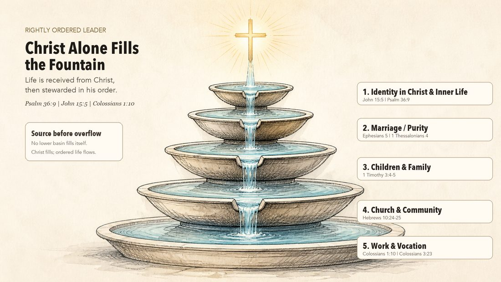

The Rightly Ordered Leader
Applied formats of the framework — added here as each is introduced.
One framework, grounded entirely in Scripture, applied at every stage of life — from the student preparing for what’s next to the leader further along handing off what he’s built.
Jesus Christ saves sinners by grace through faith and calls His people to follow Him. Rightly Ordered Leadership connects that gospel foundation with Scripture study, guided practice, and continued discipleship. The Fountain and the sequence below are teaching aids — ways of illustrating what Scripture teaches, not independent proof of it.
Jump to: Youth curriculum · Residential course · Book

The Fountain
Christ at the source, flowing out through identity and the inner life, marriage and purity, children and family, church and community, and into work and vocation. Order that starts on the inside and works its way out — not a system projected from the outside in. Faithful singleness and differing family circumstances belong within this understanding of discipleship.
Underneath every applied format runs the same sequence: communion with God, then hearing Him, identity, alignment, authority, character, discipline, community, pressure, discernment, multiplication, and sending. Each program below is that sequence, translated for a specific season of life.
Across every format, the material asks participants to practice four things: reading Scripture in context, distinguishing what it teaches from personal preference, responding faithfully in real responsibilities, and helping others learn the same with humility. Growth is measured by understanding and practice over time — completing a format begins further discipleship, it does not finish it.
Now Introducing
A weekly, semester-long small-group curriculum that brings the Rightly Ordered Leader framework into youth ministry.
Every student is being formed by something. Left alone, it’s the surrounding culture — absorbed by default and mistaken for common sense by the time it’s load-bearing. This course trains a student to tell the difference between a conviction that came from Scripture and a norm they picked up without noticing, then take the norm off.
How each week works
Look Up (the text), Look In (reflection), Look Out (application) — then Together as a full group into Feedback Triads, small groups of two or three giving and receiving feedback that’s anchored in Scripture, not opinion.
The arc
Why Order Matters → Feedback Training → Identity in Christ → Purity & Relationships → Family → Church & Community → Calling & Future → Legacy
Built on the same framework as the flagship course — the Fountain — re-illustrated for high school life rather than borrowed from an adult or professional setting. Grounded in Scripture and submitted to careful interpretation, not proven by a market test: this is a first offering, built to run with a real group and revised as it’s used.
Status
Curriculum under revision for a supervised first pilot.
Bring this to your ministry →Two-Week Intensive
A day-by-day residential course design that walks a group through the whole Fountain in a focused two-week arc.
Each day moves through Scripture, a teaching block, and an applied exercise, then closes with an after-action review — the same rhythm used to train people under real pressure, turned toward spiritual formation instead of a tactical skill. The arc runs the full Fountain: identity in Christ, then marriage and family, then church, community, and vocation.
Grounded in Scripture, not a market test — and, like every Rightly Ordered format, still a first offering. This design hasn’t yet been piloted with a group.
Status
Residential course design in development for a first pilot.
Ask about bringing a cohort together →In Development
A book about following Christ and stewarding responsibility faithfully.
Its opening chapter begins with the gospel and the narrow road, then introduces the formation journey explored through the rest of the book.
Status
Manuscript in development.
Ask about the book →Your church or organization has people, responsibilities, and questions that deserve to be understood. An initial conversation helps us decide whether an existing ROL format fits, whether adaptation is needed, and what preparation should come first.
The Fountain applies to every area of life — not only the formats already built.
If your church, team, or organization needs Rightly Ordered built for a specific context — a men’s or women’s ministry, a leadership team, a particular vocation or season of life — PathLight will build it with you rather than hand over something made for someone else.
Reach out, and we’ll work through what your people actually need before anything gets written, so the result fits your organization and situation rather than a generic template.
Start the conversation →Why It Matters
Every format above teaches the same handful of things. They’re worth naming on their own — and worth asking whether your group, gathering, or church is teaching them anywhere else.
A norm absorbed is not a conviction earned
Everyone is being formed by something. Left unexamined, it’s whatever culture surrounds them — absorbed by default and mistaken for common sense by the time it’s load-bearing. Scripture doesn’t call God’s people to withdraw from that culture, and it doesn’t call them to blend into it (Romans 12:2). It describes a third way: called out, while still in it. The first thing any group has to learn is how to tell the difference between the two.
Feedback that answers to Scripture, not to the room
A small group that meets every week can quietly become one more culture to conform to — the very problem it was meant to correct, wearing different clothes. That’s why every Rightly Ordered format trains one specific habit: when someone says “we don’t do that here,” the next question is where Scripture says it. If it doesn’t, it’s a preference, and a preference doesn’t bind anyone’s conscience. Iron only sharpens iron when the edge is Scripture, not opinion.
Every sphere of life, not one topic
Identity, marriage, family, church, work, authority — Scripture speaks to all of it, not just the Sunday-morning slice. Formation that only touches one sphere leaves the other five to be shaped by whatever’s loudest that week. The Fountain runs through all of them on purpose.
Built to be handed off, not just absorbed
The goal isn’t that someone finishes the material. It’s that they practice leading someone else through it, with real opportunities as they’re ready. That’s why this belongs inside a group, a gathering, a church — formation that only runs one direction, teacher to listener, stops the moment the teacher steps out of the room. Formation built to multiply keeps going after that.